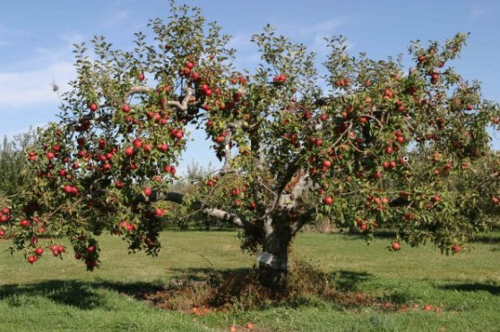

Es un árbol de mediano tamaño (4m de altura), inerme, caducifolio, de copa redondeada abierta y numerosas ramas que se desarrollan casi horizontalmente. El tronco tiene corteza agrietada que se desprende en placas. Las hojas, estipuladas y cortamente pecioladas, son ovaladas, acuminadas u obtusas, de base cuneada o redondeada, generalmente de bordes aserradas pero ocasionalmente sub-enteras, de fuerte color verde y con pubescencia en el envés. Al estrujarlas despiden un agradable aroma.
La inflorescencia es una cima umbeliforme o corimbiforme con 4-8 flores hermafroditas de ovario infero, siendo la central la primera en formarse en posición terminal, resultando la más desarrollada y competitiva. A esta se le llama comúnmente "flor reina" y generalmente produce los frutos de mayor tamaño y calidad.
El manzano florece en primavera antes de la aparición anual de sus hojas. El fruto, la manzana, es un pomo de 30-100 por 35-110 mm, globoso, con restos de cáliz en el ápice, verde, amarillo, rojizo, etc...con semillas de 7-8 por 4mm. La manzana suele madurar hacia el otoño.

El manzano
El manzano grande
que está junto al rio
despierta sus ramas
cuando se va el frio.
Fuertes y brillantes
le salen las hojas.
Cuando haya manzanas
serán deliciosas.
Al llegar Octubre
las recogeremos
y tendremos postre
durante el invierno.
Mama hará compotas
tartas, mermeladas.
¡A ver si maduran
que ya tengo ganas!
Ana m.ª Romero Yebra